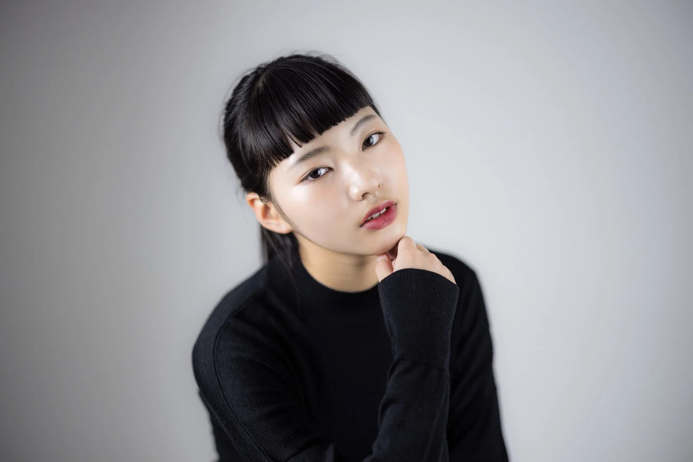
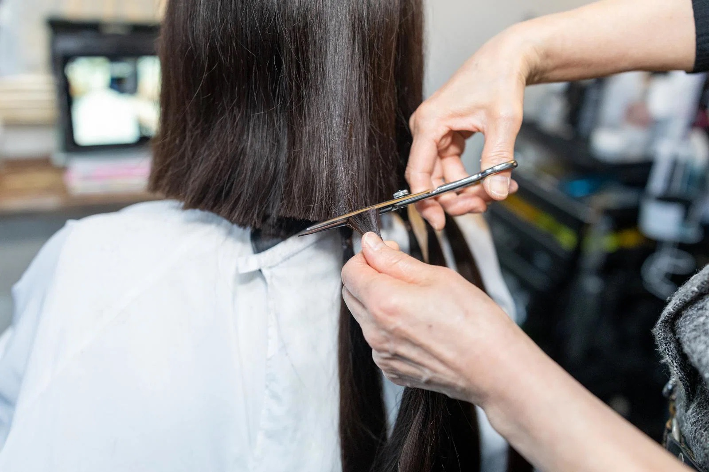
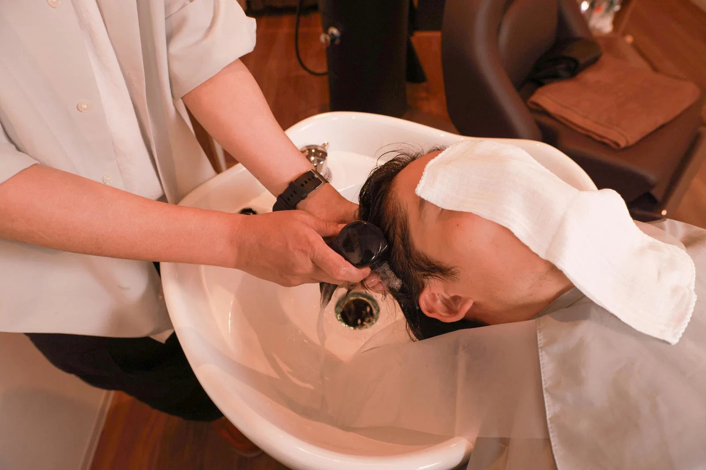

髪型を決めるのは、流行じゃなくて、その人の毎日。


「似合う」は、鏡の前だけで決めない。
中目黒駅から徒歩4分、スタイリスト4名の小さなサロンです。はじめに30分、暮らしの話を聞いてから切ります。朝のセットにかけられる時間、仕事の制約、結びたいかどうか。鏡の中で似合っていても、翌朝の洗面所で再現できなければ意味がないと思っています。
だから、乾かすだけで形になる切り方を。カラーは、伸びてきたときの境目がきれいなものを。次に来るのが2か月後でも、3か月後でも、その間ずっと「いい感じ」でいられるように。

スタイリスト

宗 一樹Kazuki So, owner
ドライカットと白髪ぼかし。15年目。

早川 りおRio Hayakawa
ショートとボブ。乾かすだけで決まる形を。

田所 慎Shin Tadokoro
メンズとパーマ。ひげも整えます。

北村 芽衣Mei Kitamura
カラーとハイライト。透明感のある寒色。



10:00–20:00火〜日 ／ 月曜定休
- 住所
- 目黒区上目黒 1-12-8 2F（中目黒駅 正面口から徒歩4分）
- 電話
- 03-1234-5678
- 席
- 4席。個室はありません。お子さま連れは平日の午前にどうぞ。
- 支払い
- 現金、カード、交通系IC、PayPay
- 予約
- WEBは24時間。当日は電話で。